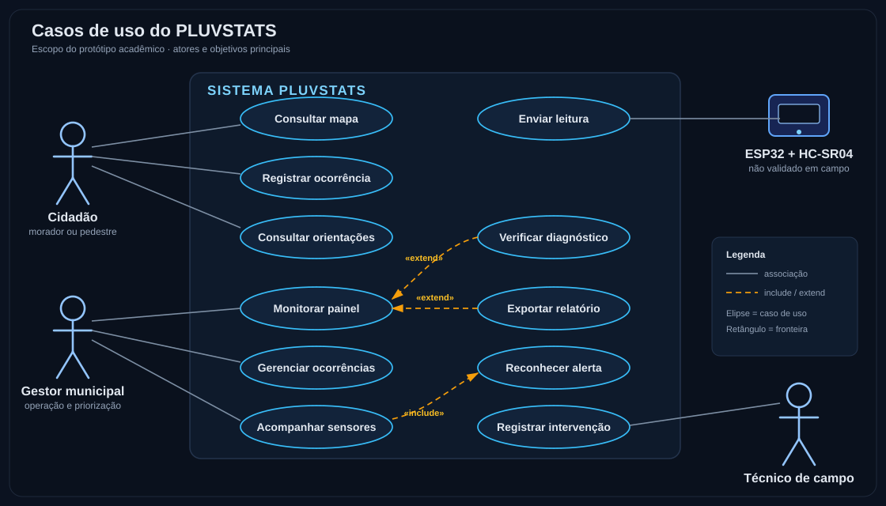
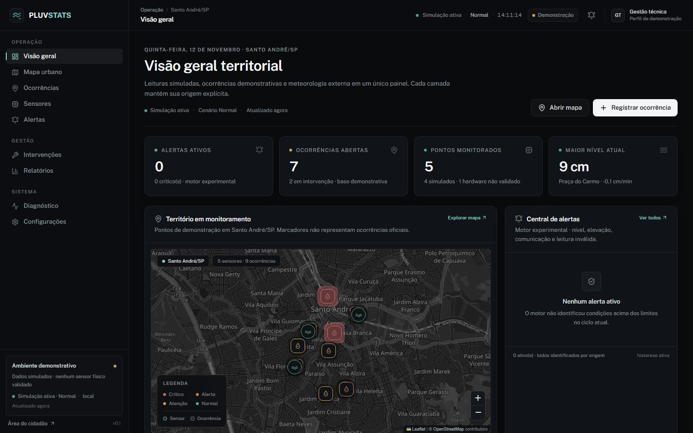
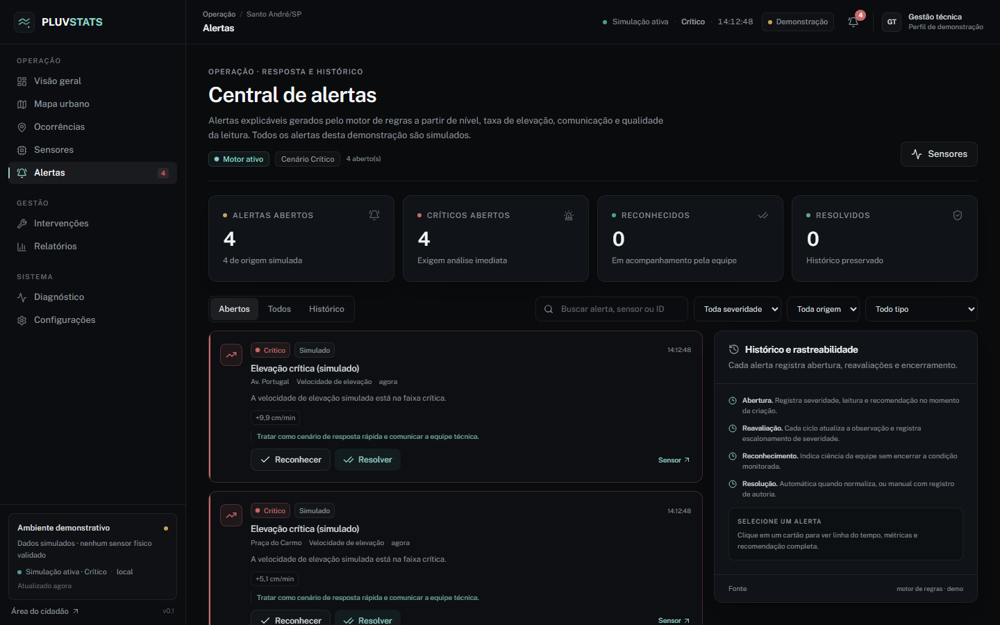
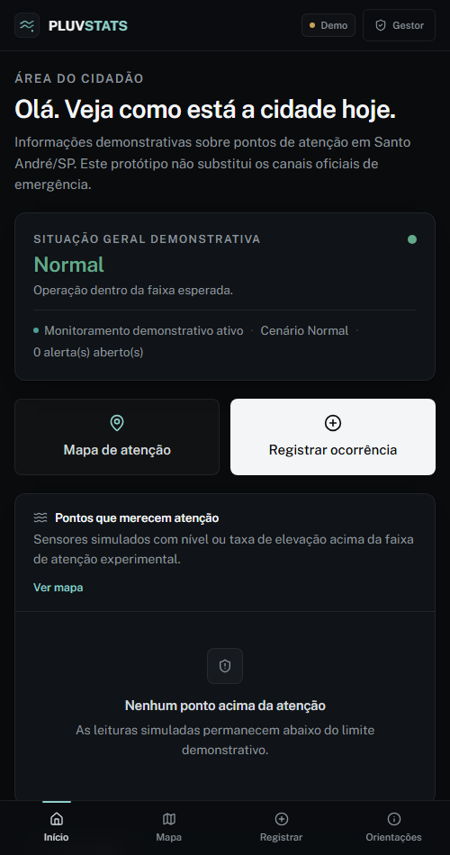
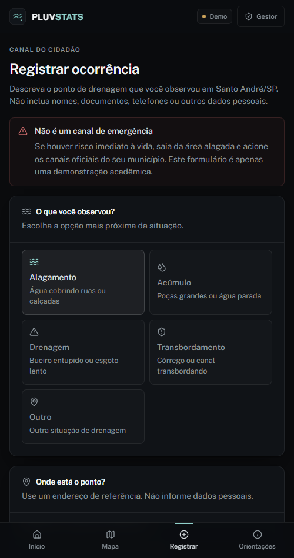

Uma proposta de monitoramento de pontos de alagamento que conecta problema, pessoas, requisitos, protótipo e próximos passos — sem esconder o que ainda é hipótese.
pontos monitorados na demonstração
experiências: gestão e cidadania
sensores físicos validados em campo
A apresentação segue a mesma sequência que a equipe usou para decidir o produto. Cada ato responde a uma pergunta da banca e termina em uma evidência verificável.
Informação fragmentada, origem incerta e dificuldade de transformar sinal em decisão.
Lê distância, calcula nível e tendência, prioriza pontos e conecta gestão e cidadão.
Painel denso para gestão; área simples e legível para o cidadão, com limites explícitos.
Pesquisa com pessoas, teste de bancada, acessibilidade, deploy e parceria institucional.
O que está dentro e fora está escrito antes do protótipo. Nada é prometido sem evidência.
As duas áreas compartilham a mesma fonte de limiares e o mesmo compromisso de proveniência.
O roadmap não é uma lista de desejos: cada etapa tem objetivo, resultado esperado e critério de parada.
Chuva forte, drenagem insuficiente e obstruções produzem pontos de alagamento. A informação chega por relatos, canais separados e planilhas, muitas vezes sem horário, origem ou vínculo com um dispositivo.
Moradores, pedestres, motoristas, idosos e pessoas com mobilidade reduzida. Na gestão, analistas e equipes de campo precisam priorizar vistorias e prestar contas com pouco contexto.
Sem proveniência, um número parece oficial sem ser. Sem linguagem simples, o cidadão não sabe se o ponto é seguro nem a quem recorrer. A decisão fica mais lenta e menos transparente.
Não há entrevista, pesquisa de campo ou medição física nesta entrega. O problema acima é uma hipótese de projeto construída a partir do briefing e de observação informal do território. O plano de pesquisa define como validá-la.
lacuna declarada
| Afirmação | Status | Como tratamos na entrega |
|---|---|---|
| O território tem pontos de alagamento | fato público | O projeto usa Santo André/SP como território demonstrativo, sem afirmar ocorrências oficiais ou localizações exatas. |
| A informação é fragmentada | hipótese qualitativa | O produto foi desenhado para evidenciar origem, idade e limite de cada dado; a hipótese será testada com pessoas. |
| O cidadão precisa de linguagem simples | hipótese de design | A área do cidadão usa frases curtas, piso tipográfico maior e nenhum dado pessoal no registro. |
| O hardware funciona em campo | não validado | O firmware e o diagrama estão preparados, mas não foram testados fisicamente. O status aparece no produto. |
| O modelo prevê enchentes | não | O modelo é linear e didático. Ele calcula nível, taxa e tempo até um limite; não é hidrologia calibrada. |
O sistema não aciona equipes. Em risco imediato, a interface orienta procurar os canais oficiais.
Nada é apresentado como oficial. Simulação, demonstração e hardware têm marcadores distintos.
O modelo é linear e o sensor é de baixo custo. A incerteza é declarada, não maquiada.
| ID | Requisito | Classificação | Justificativa ligada ao problema |
|---|---|---|---|
| RF-01 | Iniciar em demonstração identificada | Funcional · obrigatório | Permite avaliar sem hardware e sem confundir dado simulado com real. |
| RF-02 | Exibir visão territorial consolidada | Funcional · obrigatório | O gestor precisa de contexto antes de agir, não de números soltos. |
| RF-03 | Permitir CRUD de ocorrências | Funcional · obrigatório | É o registro mínimo para triagem, priorização e prestação de contas. |
| RF-04 | Listar sensores com origem e qualidade | Funcional · obrigatório | Sem origem e idade, uma leitura não é confiável nem auditável. |
| RF-05 | Gerar alertas com severidade e recomendação | Funcional · obrigatório | Transforma sinal em ação: reconhecer, resolver ou encaminhar. |
| RF-06 | Registrar intervenção vinculada à ocorrência | Funcional · obrigatório | Fecha o ciclo entre detecção, vistoria e normalização. |
| RF-07 | Oferecer área do cidadão mobile-first | Funcional · obrigatório | O benefício precisa chegar a quem está na rua, não só ao gabinete. |
| RF-08 | Diagnosticar fallback e hardware | Funcional · obrigatório | Torna a limitação visível para avaliador, gestor e equipe técnica. |
| RF-09 | Exportar indicadores experimentais | Funcional · desejável | Apoia apresentação de resultados, desde que com ressalvas visíveis. |
Rastreabilidade completa em design/requirements/requirements.md e documentation/testing/README.md.
| ID | Condição e justificativa |
|---|---|
| RNF-01 | Sem segredo no frontend. Só variáveis públicas; reduz exposição e facilita auditoria. |
| RNF-02 | Simulação nunca vira hardware. Evita que uma demonstração seja lida como sensor real. |
| RNF-03 | Fallback explícito. A interface continua útil e informa por que a API não respondeu. |
| RNF-04 | Testes nas regras críticas. 23 frontend, 31 backend, 35 matemática, 12 Python e 4 edge. |
| RNF-05 | Privacidade por padrão. Registro do cidadão não pede nome, telefone ou documento. |
| RNF-06 | Acessibilidade básica. Skip link, foco visível, rótulos e contraste; auditoria formal é lacuna. |
| RNF-07 | Reprodutibilidade. Comandos documentados, dependências fixadas e dados de exemplo versionados. |
| RNF-08 | Uma fonte de limiares. JSON compartilhado evita divergência entre frontend, API, edge e Python. |
| ID | Regra e consequência |
|---|---|
| RN-01 | h = H − d, limitado a [0, profundidade]. Impede nível negativo ou acima do canal. |
| RN-02 | v = Δh/Δt com Δt > 0. Sem intervalo válido, não há taxa. |
| RN-03 | Tempo até o limite só quando v > 0 e h < limite; caso contrário, indefinido. |
| RN-04 | Histerese mantém a severidade dentro da banda e evita oscilação visual. |
| RN-05 | Leitura inválida é auditada, mas não valida o dispositivo. |
| RN-06 | Leitura antiga não comprova conexão. A janela de validade é explícita. |
| RN-07 | Intervenção concluída exige nível final e data; sem isso, fica em andamento. |
| RN-08 | Alerta resolvido não pode ser reconhecido novamente; o histórico é preservado. |

| Ator | Objetivo principal | O que faz no sistema | Limite |
|---|---|---|---|
| Cidadão morador ou pedestre |
Entender se o ponto próximo está em atenção e registrar um problema. | Consulta o mapa de atenção, registra ocorrência sem dados pessoais e lê orientações de segurança. | Não vê dados internos, não reconhece alertas e não aciona equipes. |
| Gestor municipal operação e priorização |
Priorizar pontos, acompanhar alertas e prestar contas com contexto. | Monitora o painel, gerencia ocorrências, acompanha sensores, reconhece alertas, exporta relatórios e verifica o diagnóstico. | Não tem integração oficial nem poderes de emergência. |
| Técnico de campo vistoria e intervenção |
Registrar a intervenção e comprovar a normalização do ponto. | Consulta a ocorrência, registra a vistoria e informa o nível final ao concluir. | Não altera limiares nem valida hardware sem leitura válida. |
| ESP32 + HC-SR04 ator secundário |
Enviar leituras de distância com identificação do dispositivo. | Executa a decisão local, publica leitura quando há conectividade e mantém o estado seguro sem rede. | Não foi validado fisicamente; não é tratado como hardware real nesta entrega. |
«include» Acompanhar sensores inclui Reconhecer alerta. «extend» Exportar relatório e Verificar diagnóstico estendem o painel. «include» Registrar intervenção inclui informar o nível final.
Não há caso de uso de login, envio a órgão público, previsão de enchente ou aplicativo nativo. O que não está no escopo não aparece no diagrama.

Primeiro o estado geral e os contadores; depois mapa, alertas e atividade. O olho sabe onde começar.
O selo “Demonstração” fica no topo. Cada sensor mostra origem, idade e validação.
“Registrar ocorrência” é a ação primária; “Abrir mapa” é secundária. Nada compete com o fluxo principal.

“Elevação crítica (simulado)” com sensor, bairro, métrica e horário. O título não sugere emergência real.
A severidade vem de regras determinísticas sobre limiares experimentais. O selo “Simulado” acompanha o cartão.
Reconhecer ou resolver. Um alerta reconhecido continua aberto até a condição normalizar.


Texto-base de 14–15 px, títulos maiores e contraste alto. O público inclui idosos e pessoas com baixa visão.
“Pontos que merecem atenção”, “O que você observou?” e “Em caso de risco imediato”.
Nenhum nome, telefone ou documento. O protocolo é demonstrativo e o texto diz isso.
Selo “Demonstração”, cenário ativo, idade da leitura e status do hardware no topo de cada área.
Nível em cm, taxa em cm/min e “tempo até o limite” — unidades que o gestor já usa.
Cancelar registro, limpar filtros, pausar simulação e restaurar a demonstração.
Mesmos badges de severidade, origem e status nas duas áreas; uma fonte de limiares.
Validação de faixa na leitura, confirmação antes de apagar e nível final obrigatório na intervenção.
O alerta mostra a métrica que o gerou; o diagnóstico lista o que falta para validar hardware.
Mapa com deep link, filtros, busca e visão em cards ou tabela para perfis diferentes.
Gestão densa e hierarquizada; cidadão com uma decisão por tela e texto curto.
Mensagens dizem o que aconteceu e como corrigir: “Digite um número entre 25 e 375 cm”, “API indisponível; usando demonstração local”.
Orientações do cidadão, Diagnóstico e README explicam limites, fallback e o que é simulado — sem prometer emergência.
Entrevistas semiestruturadas com moradores, gestores e técnicos. Resultado: hipóteses validadas ou corrigidas.
Teste de usabilidade com tarefas no celular e no desktop. Resultado: lista priorizada de ajustes de linguagem e fluxo.
Medir distâncias conhecidas com HC-SR04 em diferentes superfícies. Resultado: erro, faixa confiável e necessidade de calibração.
Compilar, simular todos os estados e gravar o vídeo. Resultado: decisão local comprovada e links públicos.
Auditoria WCAG, teste com leitor de tela, autenticação e revisão de privacidade. Resultado: uso responsável em produção.
Definir indicadores, governança e integração com um parceiro real. Resultado: impacto medido, não prometido.
não há validação de problema ou de linguagem. A primeira etapa é conversar.
não há hardware validado. O firmware continua marcado como não testado.
não há piloto nem impacto medido. O sistema não substitui órgão público.
Uma pessoa externa entende o problema, o escopo e os limites sem a equipe explicar.
Testes, build e fluxo demonstrativo reproduzíveis em outra máquina.
O cidadão encontra o registro e entende que o canal não é emergência.
testes de frontend (Vitest)
testes de backend (pytest)
testes de matemática (unittest)
testes da aplicação Python
O PLUVSTATS não promete prever enchentes. Ele organiza sinais, mostra a origem e ajuda pessoas a decidir melhor — com espaço para evoluir com evidência.
Informação fragmentada e decisão sem contexto.
Monitoramento, priorização e cidadania com proveniência.
Conversar com pessoas, testar a bancada e medir o que funciona.
Global Solution 2026.2 · CitizenTech · Engenharia de Software · 1º ano · FIAP